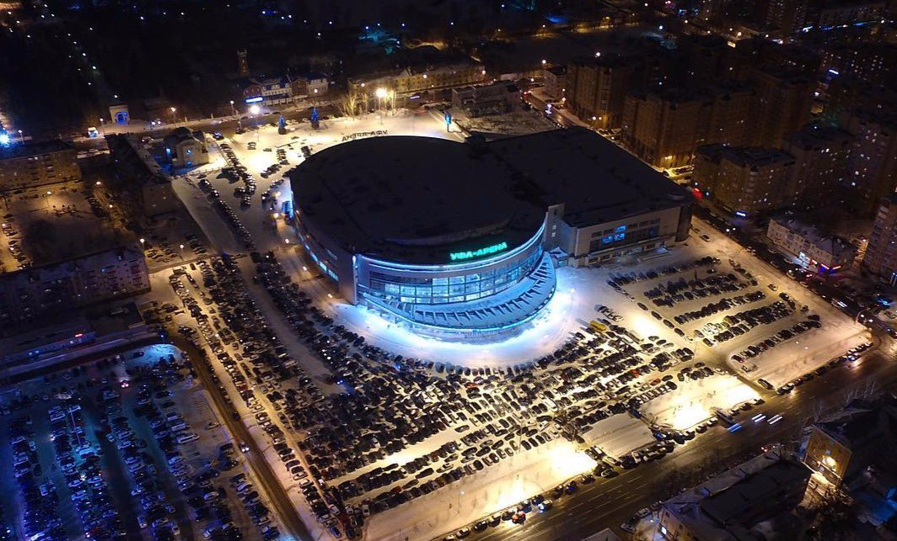
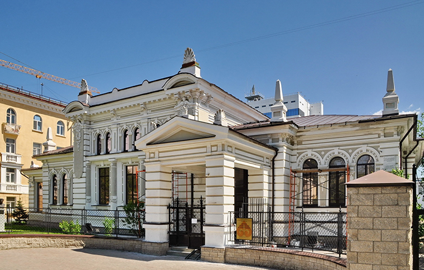
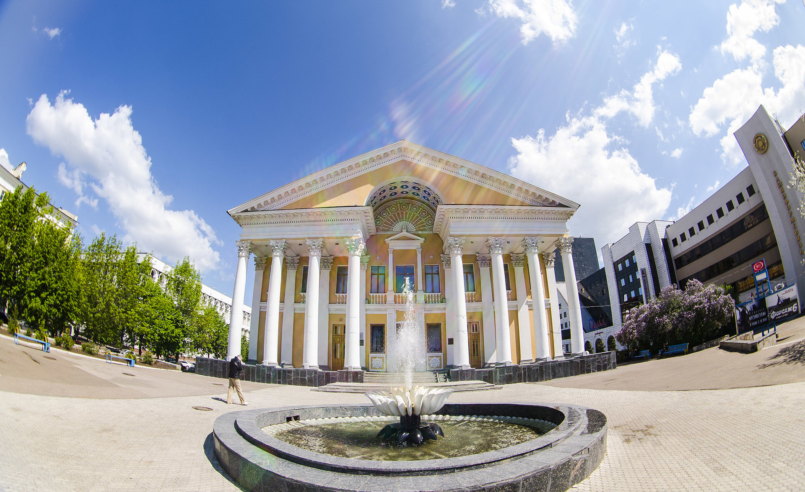
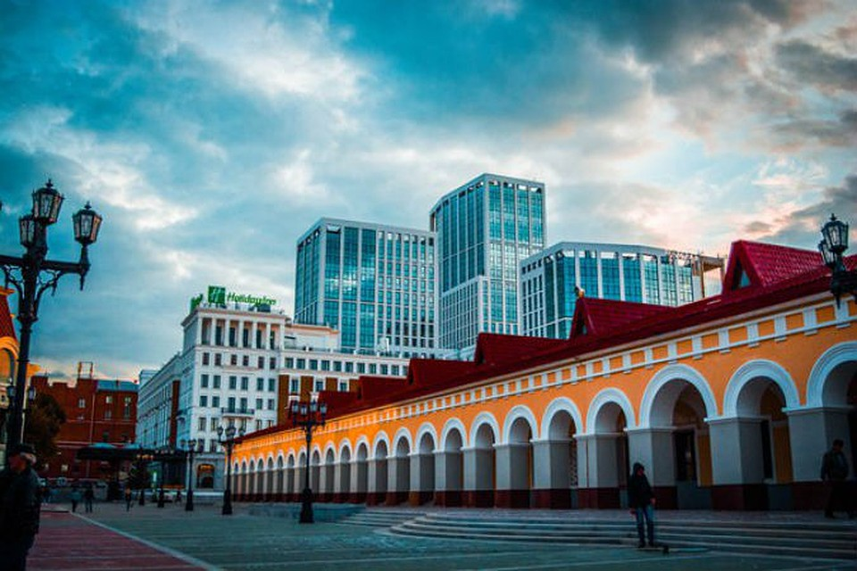

Архитектура Башкортстана
Содержание:
 Конгресс-хол республики Башкортстан. Современное здание конгресс-холла Республики Башкортостан, служащее одной из главных достопримечательностей Уфы, построено на берегу реки Белой в 2007 году.
Конгресс-хол республики Башкортстан. Современное здание конгресс-холла Республики Башкортостан, служащее одной из главных достопримечательностей Уфы, построено на берегу реки Белой в 2007 году.
Архитектура этого необычного сооружения характеризуется наличием пространственных, формообразующих и цветовых прототипов башкирской культуры. Воплощением такого национального стиля стал остекленный фасад с башкирским орнаментом, смотрящий на реку Белую. Возле этого фасада на аллее Салавата Юлаева находится самый большой в республике комплекс фонтанов.
Общая площадь конгресс-холла составляет порядка 36 тысяч квадратных метров. В его структуру входят: концертный зал на 774 места, два конференц-зала, музейно-выставочный комплекс, ресторан национальной кухни, зимний сад, торговый центр и подземный паркинг на 230 машин.
«Уфа-Арена». Универсальный спортивный комплекс «Уфа-Арена», служащий домашней площадкой для местного хоккейного клуба «Салават Юлаев», был построен в 2007 году.
«Уфа-Арена» состоит из двух ледовых площадок: главной (на 8070 зрителей) и малой (640 зрителей). На первом этаже спортивного комплекса располагаются комнаты отдыха для спортсменов и тренерского состава, бокс для судейского корпуса, сауна, массажная комната и др.
Арена состоит из четырёх ярусов: вход на секторы осуществляется через второй, третий и четвёртый.
Дом-особняк Е.А. Поносовой-Молло. Дом-особняк Е.А. Поносовой-Молло в Кировском районе был построен по заказу купца и горнозаводчика С.С. Манаева для купчихи Е.А. Поносовой-Молло в 1910 году.
Данное сооружение стало первым в Уфе домом в стиле модерн. Здание состоит из двух этажей, вход расположен в центральной части, имеется выносное крыльцо в виде двухколонного портика с квадратными колоннами и треугольным фронтоном. Главный фасад украшен рустовкой, художественными карнизами, лепными украшениями и оконными наличниками. На территории особняка также расположены сад, фонтан и подсобные помещения.
Сегодня в этом здании находится Музей археологии и этнографии.
Кинотеатр «Родина». Уфимский кинотеатр «Родина» был построен в 1954 году. Он включал в себя два зала – синий и красный, каждый из которых был рассчитан на 350 зрителей. В связи с большим наплывом зрителей, было принято решение пристроить еще один зал на 60 мест, который получил название «зеленый».
Сегодня здание кинотеатра представляет собой массивную высокую постройку с острой крышей. Сооружение, выполненное в стиле "сталинский ампир", имеет белые колонны с ажурными пилястрами и большие окна, вокруг которых расположены различные декоративные элементы. Весьма необычен и главный вход в здание, увенчанный купольной аркой с ажурным орнаментом.
Гостиный двор. Комплекс Гостиного двора в Уфе выл возведен в 1866 году. В период с 1941 года по начало 1980-ых годов большую часть помещений Гостиного двора занимал Уфимский хлопчатобумажный комбинат.
В конце XX века здание Гостиного двора хотели сносить, однако на его защиту встали местные жители. Начало реконструкции положил указ Президента Республики Башкортостан от 11 августа 1995 года, а уже в октябре 1999 года воссозданный Гостиный двор открылся и стал выполнять функцию торгового, делового и культурного центра не только Уфы, но и всей Башкирии.
В декабре 2014 года завершилась реконструкция Гостиного двора, в следствии чего возросло количество парковочных мест (280→1100), а также появился большой маркет, кофе, детские зоны, зоны услуг и другое.
 Мечеть Хамза-Хаджи. Мечеть «Хамза-Хаджи» была построена в микрорайоне Сипайлово в 2006 году. Строительство культового объекта велось на протяжении 10 лет на частные средства муфтия Хамза-Хаджи Галлямова.
Мечеть Хамза-Хаджи. Мечеть «Хамза-Хаджи» была построена в микрорайоне Сипайлово в 2006 году. Строительство культового объекта велось на протяжении 10 лет на частные средства муфтия Хамза-Хаджи Галлямова.
При мечети, названной в его честь, работает мусульманская библиотека и медресе с интернатом для детей из малообеспеченных семей.
Несмотря на значимость этой мечети для города, в последнее время стали появляться слухи о том, что власти города намерены ее снести.